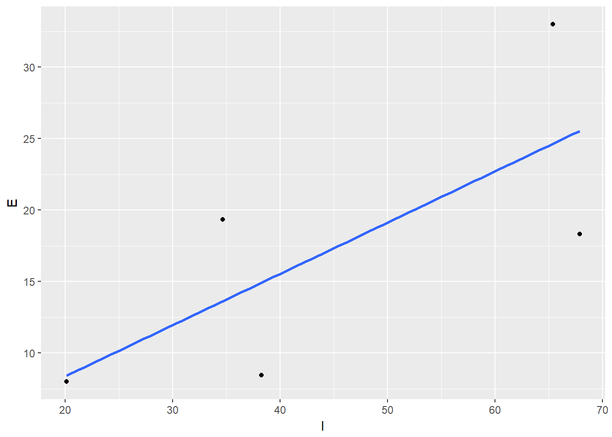
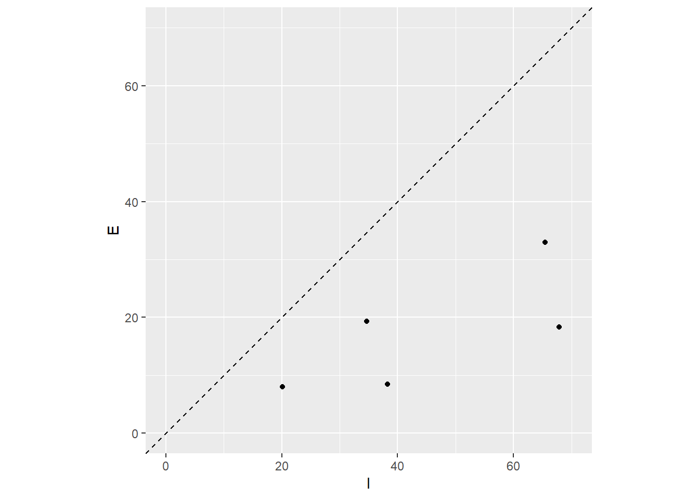

R luncheon 1
Lesson Outline
Welcome to the first R luncheon! These short and informal sessions are designed for continued learning of R that builds off of our previous training sessions (access any of the earlier content from our home page). Our goal is to understand how we use R to approach real-world examples in bite size chunks. Each session will focus on a selected problem that may be specific to a research area but contains analysis challenges that are shared no matter the context. The discussion will contain two parts:
Presentation of the problem: what we are starting with and where we want to go.
Steps to address the problem in general terms
Specific steps to address the problem using R
Execution of the workflow to achieve the final product.
Please note that this is not an introduction to R. You are expected to have some background knowledge with the understanding that you may not be comfortable using R to complete all steps of an analysis. You should leave the session with a greater understanding of how R can help you develop an efficient and repeatable workflow for your own data challenges. I encourage lively discussion as we go through the workflow for each luncheon, so ask plenty of questions!
Problem scope
Today’s session will use a compiled dataset that describes filtration of stormwater at different treatment locations in California. The dataset has measured influent and effluent concentrations of different water quality parameters that were measured during storm events. The general goal is to quantify filtration effectiveness by comparing influent/effluent concentrations with the storm events across several locations. This will provide a benchmark of how well stormwater treatment locations are filtering different water quality parameters during high flow events (i.e., storms).

We want to create a plot like this after getting the raw data in the correct format.
The data are messy. The spreadsheet includes measurements from different locations where record-keeping was not consistent. Each location may also include several filtration samples, with measurements for one or more storm events. There are several columns in the dataset, not all of which are relevant for our analysis. Here’s a screenshot:
We want to import the data, wrangle the information to a consistent format, and plot the data to help us assess how well the filtration systems are removing water quality constituents. Each of these steps can be performed in R.
Import the Excel spreadsheet
Wrangle the data to a consistent format. This will require removing extra columns we don’t need, filtering the observations (rows) for a water quality parameter we’re interested in, and develop a consistent convention that will allow to compare between stormwater treatment locations, filtration samples, and storm events.
Plot the data using a simple scatterplot of effluent concentration (y-axis) against influent concentration (x-axis). Our hope is that effluent concentrations will be lower than influent concentrations as a measure of how well the filtration systems are working.
Housekeeping
Let’s start by opening RStudio, creating a new project, and downloading the data to the project.
Open RStudio
Find the RStudio shortcut and fire it up. You should see something like this:

Create a new project in RStudio
To create a new project, click on the File menu at the top and select ‘New project…’

Download the data to your project
You can download the data from this link. Once downloaded, you’ll have to copy and paste the Excel file to your project. Run getwd() in the R console if you’re not sure where this is.
You can also download the data file directly in R. This will download the data and save the file to your new RStudio project in a single step.
# download the data
download.file(
url = 'https://sccwrp.github.io/SCCWRP_R_training/data/CA_DetentionBasin2.xlsx',
destfile= 'CA_DetentionBasin2.xlsx'
)Data import
Now that we’ve got our project setup with the data, let’s open a new script and load some R packages that we’ll be using.
Open a new script from the File menu…

Once the script is open, save it using the drop down file menu on the top left. Give it an informative name (e.g.,Rluncheon1.R) and save it in your project’s home directory. This should be the default location selected by RStudio when you save the file.
We’ll be using functions from the tidyverse collection of packages to import, wrangle, and plot the data. Checkout our training material here if you need a brush up. Run this line in the R console if you don’t have the tidyverse installed.
install.packages('tidyverse')In the script you just opened, add the following lines to load the tidyverse package and the readxl package (for data import).
library(tidyverse)
library(readxl)Then add this line to import the dataset using the read_excel() function. The imported dataset will be assigned to the dat variable in the workspace for your current R session.
dat <- read_excel('CA_DetentionBasin2.xlsx')Let’s get a feeling for the dataset before we proceed.
head(dat)## # A tibble: 6 x 23
## SITEID SITENAME MSID MSNAME `Storm #` SAMPLEDATE SAMPLETIME
## <dbl> <chr> <dbl> <chr> <dbl> <dttm> <lgl>
## 1 -1.78e9 I-5 / S~ -1.02e9 27E 16 2001-03-06 00:00:00 NA
## 2 -1.78e9 I-5 / S~ 1.08e9 27I 18 2001-04-20 00:00:00 NA
## 3 -1.78e9 I-5 / S~ 1.08e9 27I 18 2001-04-21 00:00:00 NA
## 4 -1.78e9 I-5 / S~ 1.08e9 27I 15 2001-02-23 00:00:00 NA
## 5 -1.78e9 I-5 / S~ 1.08e9 27I 3 1999-03-26 00:00:00 NA
## 6 -1.78e9 I-5 / S~ 1.08e9 27I 9 2000-03-04 00:00:00 NA
## # ... with 16 more variables: `WQX Parameter` <chr>, `Sample
## # Fraction` <chr>, `WQ Analysis Value` <dbl>, `WQ Units` <chr>,
## # MEDIA <chr>, QUAL <chr>, METHOD <lgl>, DLUnits <chr>, SGTCODE <dbl>,
## # SGTCodeDescp <chr>, STCODE <dbl>, STCODEDescp <chr>, COMPOSITNU <lgl>,
## # QAQC <chr>, Cat_AnalysisFlag <chr>, COMMENT <chr>str(dat)## Classes 'tbl_df', 'tbl' and 'data.frame': 2875 obs. of 23 variables:
## $ SITEID : num -1.78e+09 -1.78e+09 -1.78e+09 -1.78e+09 -1.78e+09 ...
## $ SITENAME : chr "I-5 / SR-56" "I-5 / SR-56" "I-5 / SR-56" "I-5 / SR-56" ...
## $ MSID : num -1.02e+09 1.08e+09 1.08e+09 1.08e+09 1.08e+09 ...
## $ MSNAME : chr "27E" "27I" "27I" "27I" ...
## $ Storm # : num 16 18 18 15 3 9 18 11 14 16 ...
## $ SAMPLEDATE : POSIXct, format: "2001-03-06" "2001-04-20" ...
## $ SAMPLETIME : logi NA NA NA NA NA NA ...
## $ WQX Parameter : chr "Kjeldahl nitrogen" "Arsenic" "Nickel" "Organic Carbon" ...
## $ Sample Fraction : chr "Total" "Dissolved" "Total" "Total" ...
## $ WQ Analysis Value: num 5.7e-01 1.2 4.7 1.0e+01 7.6e+01 5.2e+01 2.3 1.1e+04 1.9e+02 2.0e-01 ...
## $ WQ Units : chr "mg/L" "µg/L" "µg/L" "mg/L" ...
## $ MEDIA : chr "Water" "Water" "Water" "Water" ...
## $ QUAL : chr NA NA NA NA ...
## $ METHOD : logi NA NA NA NA NA NA ...
## $ DLUnits : chr "mg/L" "µg/L" "µg/L" "mg/L" ...
## $ SGTCODE : num 1 1 1 1 1 1 1 1 1 1 ...
## $ SGTCodeDescp : chr "Surface Runoff/Flow" "Surface Runoff/Flow" "Surface Runoff/Flow" "Surface Runoff/Flow" ...
## $ STCODE : num 1 1 1 1 1 1 1 1 1 1 ...
## $ STCODEDescp : chr "Flow Weighted Composite EMCs" "Flow Weighted Composite EMCs" "Flow Weighted Composite EMCs" "Flow Weighted Composite EMCs" ...
## $ COMPOSITNU : logi NA NA NA NA NA NA ...
## $ QAQC : chr NA NA NA NA ...
## $ Cat_AnalysisFlag : chr "=" "=" "=" "n" ...
## $ COMMENT : chr NA "10 30 09 Corrected MS ID to relate 27I to inflow instead of outflow." "10 30 09 Corrected MS ID to relate 27I to inflow instead of outflow." "10 30 09 Corrected MS ID to relate 27I to inflow instead of outflow. Exc from analysis--appears to be duplicat"| __truncated__ ...Data wrangle
There’s plenty of information in this dataset that we don’t need. Let’s pare it down so it’s more manageable for our question. Before we do that, we need to decide which columns are important and which water quality parameter we care about.
As mentioned before, we want to compare influent and effluent concentrations measured for one or more samples, for one or more storms, at different stormwater treatment locations. The columns we care about are:
SITENAME: unique identifier for the stormwater treatment locationMSNAME: identifier for different samples from a stormwater treatment location, this is where the influent and effluent measurements are identifiedStorm #: identifier for storm events that occurred at a stormwater treatment locationWQX Parameter: name of measured water quality valuesWQ Analysis Value: concentration of the measured water quality values, as influent or effluent
We can use the select() function to pull the columns we want. Here we are using pipes to make the syntax a little more clear. Checkout the content here for background on the select() function and here for a refresher on pipes.
dat <- dat %>%
select(SITENAME, MSNAME, `Storm #`,`WQX Parameter`, `WQ Analysis Value`)We just created a new dat object by overwriting the previous one we made when we imported the raw data. The new object contains only the columns we care about. Also note that some column names had to be surrounded by backticks (``). R doesnt’ like it when names have “special characters”, such as spaces, so sometimes we need to use the backticks when calling the name.
Now that we have the columns we want, we still need to get the observations for the water quality parameter we want to analyze. Let’s see what’s available:
unique(dat$`WQX Parameter`)## [1] "Kjeldahl nitrogen"
## [2] "Arsenic"
## [3] "Nickel"
## [4] "Organic Carbon"
## [5] "Hardness, carbonate"
## [6] "Fecal Coliform"
## [7] "Zinc"
## [8] "Cadmium"
## [9] "Chromium"
## [10] "pH"
## [11] "Total suspended solids"
## [12] "Phosphorus as P"
## [13] "Copper"
## [14] "Lead"
## [15] "Nitrogen, Nitrate (NO3) as N"
## [16] "Total dissolved solids"
## [17] "Specific conductance"
## [18] "Phosphorus, orthophosphate as PO4"Let’s pull out the rows for lead. We can use the filter() function to get these rows by “filtering” the observations where WQX Parameter is equal to Lead. See here for a refresher of filter.
dat <- dat %>%
filter(`WQX Parameter` == 'Lead')Let’s examine our handywork:
str(dat)## Classes 'tbl_df', 'tbl' and 'data.frame': 296 obs. of 5 variables:
## $ SITENAME : chr "I-5 / SR-56" "I-5 / SR-56" "I-5 / SR-56" "I-5 / SR-56" ...
## $ MSNAME : chr "27E" "27I" "27E" "27E" ...
## $ Storm # : num 15 2 17 6 15 9 2 18 13 8 ...
## $ WQX Parameter : chr "Lead" "Lead" "Lead" "Lead" ...
## $ WQ Analysis Value: num 1 29 8.1 1.5 57 10 1 1 1.3 7 ...head(dat)## # A tibble: 6 x 5
## SITENAME MSNAME `Storm #` `WQX Parameter` `WQ Analysis Value`
## <chr> <chr> <dbl> <chr> <dbl>
## 1 I-5 / SR-56 27E 15 Lead 1
## 2 I-5 / SR-56 27I 2 Lead 29
## 3 I-5 / SR-56 27E 17 Lead 8.1
## 4 I-5 / SR-56 27E 6 Lead 1.5
## 5 I-5 / SR-56 27I 15 Lead 57
## 6 I-5 / SR-56 27E 9 Lead 10Much more manageable! Now comes the hard part… we need to get the data in a format where we can easily compare the influent and effluent concentrations, while keeping the data structured in a way so that samples for each storm event and each treatment location are consistently referenced in the rows. This is information in the dataset that needs to be retained to meaningfully evaluate filtration effectiveness. We can’t easily compare the influent/effluent concentrations in the current data because they are in the same column!
Here’s an example of what the data should look like for us to plot effluent against influent:
## # A tibble: 6 x 5
## SITENAME MSNAME `Storm #` influent effluent
## <chr> <chr> <dbl> <dbl> <dbl>
## 1 site1 sample1 1 9.71 3.56
## 2 site1 sample2 1 6.26 5.13
## 3 site1 sample3 1 9.94 4.42
## 4 site2 sample1 1 8.78 5.42
## 5 site2 sample2 2 6.96 6.31
## 6 site2 sample3 1 9.04 5.66There are three things about this dataset that differ from our actual data:
Consistent naming convention between sites and samples
Separate columns for influent and effluent
Each row references the site name, sample name, and storm number correctly for the influent and effluent observations
Before we proceed, we’ll make life a little easier by taking care of the storms column. Nabiul assures me that we can average the concentrations for multiple storm events for each site and sample combination and still meaningfully evaluate filtration efficiency. This will also get us to lunch quicker… so, we can use some tools from the dplyr package (as part of the tidyverse) to make our lives easier. We will use group_by() and summarise() to average the water quality concentrations across storms for the unique site/sample combinations (see here for more info).
dat <- dat %>%
group_by(SITENAME, MSNAME) %>%
summarise(avewq = mean(`WQ Analysis Value`))
str(dat)## Classes 'grouped_df', 'tbl_df', 'tbl' and 'data.frame': 10 obs. of 3 variables:
## $ SITENAME: chr "I-15/SR-78 EDB" "I-15/SR-78 EDB" "I-5 / I-605 EDB" "I-5 / I-605 EDB" ...
## $ MSNAME : chr "37E" "37I" "4E" "4I" ...
## $ avewq : num 8.44 38.25 19.35 34.65 8 ...
## - attr(*, "vars")= chr "SITENAME"
## - attr(*, "drop")= logi TRUEhead(dat)## # A tibble: 6 x 3
## # Groups: SITENAME [3]
## SITENAME MSNAME avewq
## <chr> <chr> <dbl>
## 1 I-15/SR-78 EDB 37E 8.44
## 2 I-15/SR-78 EDB 37I 38.2
## 3 I-5 / I-605 EDB 4E 19.4
## 4 I-5 / I-605 EDB 4I 34.6
## 5 I-5 / SR-56 27E 8
## 6 I-5 / SR-56 27I 20.1We are almost there. Now we just need to get the influent and effluent values in different columns. If you recall our earlier training sessions here, we can use the spread() function from the tidyr package (again, included in the tidyverse). This function lets us “spread” values in one column to multiple columns using “key” values in a second column. The key values are used as the column names for the values that are spread from one to many columns.
Here’s an example of spreading with a different dataset:

Let’s try this on our dataset, where the key column is MSNAME and the value column is avewq from our summarised data.
dat %>%
spread(MSNAME, avewq)## # A tibble: 5 x 11
## # Groups: SITENAME [5]
## SITENAME `27E` `27I` `31E` `31I` `37E` `37I` `4E` `4I` `5E` `5I`
## * <chr> <dbl> <dbl> <dbl> <dbl> <dbl> <dbl> <dbl> <dbl> <dbl> <dbl>
## 1 I-15/SR-78 ~ NA NA NA NA 8.44 38.2 NA NA NA NA
## 2 I-5 / I-605~ NA NA NA NA NA NA 19.4 34.6 NA NA
## 3 I-5 / SR-56 8 20.1 NA NA NA NA NA NA NA NA
## 4 I-5/Manches~ NA NA 18.3 67.9 NA NA NA NA NA NA
## 5 I-605 / SR-~ NA NA NA NA NA NA NA NA 33.0 65.4So this isn’t exactly right. The data are definitely spread but we have unique columns for every influent/effluent sample in our dataset. We’ll need to separate the sample names and the influent/effluent designations in the MSNAME column before we can proceed. If you recall from our past training, these data are not “tidy”, meaning, among other things, that the MSNAME column contains two pieces of information in one cell. The column includes information on both the sample name and the influent/effluent designation.
There’s a handy function from base R called gsub() that lets you find patterns in a character string and replace them with values of your choosing. Here, we want to create two new columns from MSNAME, one with only the sample name (numbers) and another with only the influent/effluent designations (letters). This will allow the spread() function to create a single column for influent and a single column for effluent, while retaining the correct sample and site names in the rows. This can be done as follows:
dat <- dat %>%
mutate(
samplename = gsub('[aA-zZ]+', '', MSNAME),
infeff = gsub('[0-9]+', '', MSNAME)
)
dat## # A tibble: 10 x 5
## # Groups: SITENAME [5]
## SITENAME MSNAME avewq samplename infeff
## <chr> <chr> <dbl> <chr> <chr>
## 1 I-15/SR-78 EDB 37E 8.44 37 E
## 2 I-15/SR-78 EDB 37I 38.2 37 I
## 3 I-5 / I-605 EDB 4E 19.4 4 E
## 4 I-5 / I-605 EDB 4I 34.6 4 I
## 5 I-5 / SR-56 27E 8 27 E
## 6 I-5 / SR-56 27I 20.1 27 I
## 7 I-5/Manchester (east) 31E 18.3 31 E
## 8 I-5/Manchester (east) 31I 67.9 31 I
## 9 I-605 / SR-91 EDB 5E 33.0 5 E
## 10 I-605 / SR-91 EDB 5I 65.4 5 IWe just used the mutate() function to create two new columns, where samplename was created by finding all letters in MSNAME and removing them and infeff was created by finding all digits in MSNAME and removing them. The gsub() function is very powerful and uses “regular expression matching” to search for patterns in the character strings that can be replaced (in this case, with nothing ''). This could easily cover a few hours of instruction, but here’s a cheatsheet on regular expressions if you want to learn on your own.
Now all we have to do is remove the old MSNAME column and spread as before.
dat <- dat %>%
select(-MSNAME) %>%
spread(infeff, avewq)
dat## # A tibble: 5 x 4
## # Groups: SITENAME [5]
## SITENAME samplename E I
## * <chr> <chr> <dbl> <dbl>
## 1 I-15/SR-78 EDB 37 8.44 38.2
## 2 I-5 / I-605 EDB 4 19.4 34.6
## 3 I-5 / SR-56 27 8 20.1
## 4 I-5/Manchester (east) 31 18.3 67.9
## 5 I-605 / SR-91 EDB 5 33.0 65.4Plot the data
Now we’re ready to plot! Let’s use ggplot (refresher here to make a simple scatterplot with a trend line.
ggplot(dat, aes(x = I, y = E)) +
geom_point() +
stat_smooth(method = 'lm', se = F)
Let’s make the comparisons a little easier to see. We’ll add a line through the origin and use the same scale for both axes.
ggplot(dat, aes(x = I, y = E)) +
geom_point() +
stat_smooth(method = 'lm', se = F) +
geom_abline(intercept = 0, slope = 1, linetype = 'dashed') +
scale_y_continuous(limits = c(0, 70)) +
scale_x_continuous(limits = c(0, 70)) +
coord_equal()
Summary
Let’s recap the steps:
Imported the Excel spreadsheet using the
read_excel()function from the readxl package (in tidyverse)- Wrangled the data to a consistent format.
- Selected the columns we wanted using
select() - Filtered the rows for lead using
filter() - Averaged concenctrations across storm events using
group_by()andsummarise() - Created unique columns for sample name and influent/effluent categories using
mutate()andgsub() - Spread the data using
spread()to get the influent/effluent concentrations in differnt columns
- Selected the columns we wanted using
Compared the effluent and influent concentrations using ggplot
Our conclusion? Looks like the filters are doing a good job removing lead from the stormwater.